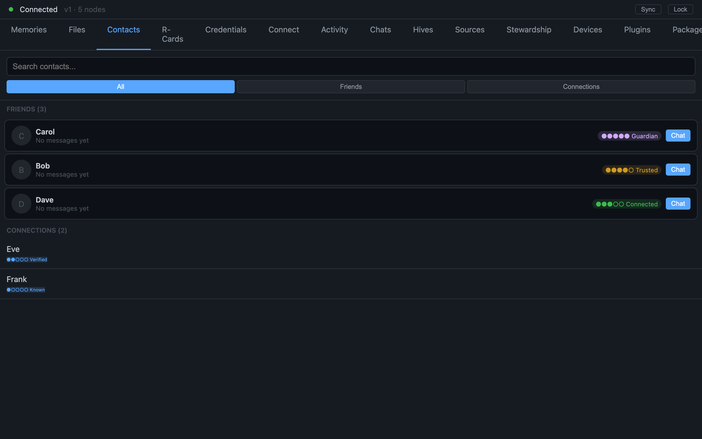

An Address Book Where Every Entry Signs Back
A contact here isn't a private string you typed — it's a relationship both people sign into being, and can verify and revoke
Open your phone's contacts. Every entry there is something you wrote down. A name you chose, a number you copied, a note only you can see. The person on the other end never consented to being in your list, has no idea what you labelled them, and holds nothing that corresponds to your entry. A contact, in the ordinary sense, is a private string in your own table. It is a claim you make about someone, and they are not party to it.

We thought a contact should be something with more integrity than that — an actual relationship, brought into existence by both people and verifiable by either. So in this system a contact is not a row you typed. It is a mutual, signed agreement, anchored on both sides, where every entry, in a real sense, signs back.
Keyed on an identity, not a phone number
Start with what a contact points at. In a normal address book the key is a phone number or an email — a handle that can be reassigned, spoofed, or recycled to someone else next year. Here the key is a decentralized identifier: an identity that carries its own cryptographic proof of who it is, that nobody hands out and nobody can take back, and that the holder can demonstrate control of without asking any authority for permission.
That single change has consequences that ripple through everything. Because the identity proves itself, a message that claims to come from a contact can be checked against that contact's own key. Because the identity is not a phone number, losing or changing your number does not detach you from your relationships. And because it is self-certifying, no server has to vouch for the mapping between "this person" and "this key" — the key is the person, as far as the system is concerned.
The handshake that makes it real
Here is how a contact actually comes into being, and it is genuinely a two-sided ceremony rather than a one-sided save.
Two people exchange small curated presentations of themselves — think of these as a self-chosen identity card you control, where you decide what claims it carries for this particular relationship. You might present one face to a colleague and a different one to a friend; that is by design. Then both people sign a mutual agreement, and the result is anchored to each side's own identity record. The contact exists only once both signatures are present. There is no "I added you and now you're in my list" — a unilateral "I trust this person" simply does not produce a relationship. Both parties have to put their name to it.
We learned to be careful about the order of this exchange, too. There was a subtle timing problem where the identity-card details and the signature steps could race, and a late-arriving claim could quietly get dropped. Fixing the sequencing so the card payload lands in proper relation to the signing is the kind of unglamorous detail that decides whether a "mutual" relationship is actually whole or just looks whole.
Directional: A-to-B is not B-to-A
Now the property that most distinguishes this from any contacts app you have used. The relationship is directional. The edge from you to me is a separate object from the edge from me to you.
This sounds like a technicality and is actually the whole philosophy. Trust, in this model, is not a number stamped on a person — it is a property of a relationship, and relationships are not symmetric. I might trust you a great deal while you have only just met me. A mentor and a newcomer do not trust each other equally, and a system that forced their relationship into one shared number would be lying about both of them. Keeping the two directions as distinct, separately signed facts lets the system represent the relationship honestly, asymmetry and all.
It also means there is no single "trust score" sitting in a database somewhere with your name on it. Standing between two people is computed from the signed edges when someone asks, weighing recent signals over stale ones — never stored as a verdict. The system treats this the way a thermometer treats a temperature: it is a reading taken in the moment, not a rating filed against you. Nothing to game, nothing to inflate, nothing that crystallises into a permanent label.
What a signed-back entry buys you
Why go to all this trouble when a list of strings works fine for most people most of the time?
Because a relationship that both sides signed is a relationship the rest of the system can trust to mean something. When you schedule a meeting, how much of your calendar the other person sees is decided by the trust on this relationship — and that only works because the relationship is a real, mutual, signed fact rather than a label you privately applied. When a message arrives claiming to be from a contact, it can be checked against that contact's proven key. When you want to revoke a relationship, you can, and the revocation is itself a signed event the other side can see — not a silent deletion from a private table they never knew existed.
A list of strings cannot carry any of that weight, because the other party was never part of it. An entry that signs back can, because it was a relationship from the start.
The honest state of it
A few things are still in motion, and it would be dishonest to imply otherwise.
There is a vocabulary shift underway — the surface language is moving toward "relationship" while the machinery underneath still speaks the older word "friendship" in its internals. That rename runs ahead of the code on purpose, and touching the deepest layer is a migration not yet scheduled. The part of the system that materialises the relationship graph is well covered by the packages that lean on it, but carries thin direct tests of its own. And the broader job of making trust signals resistant to someone manufacturing a swarm of fake relationships is an active, multi-front effort, not a solved problem.
What is solid is the core claim of this piece. A contact here is not a string you typed about someone who never agreed. It is a relationship keyed on a self-proving identity, brought into being by two signatures, kept as a directional and revocable fact, and turned — when you ask — into standing that is computed from evidence rather than stored as a score. An address book where every entry signs back is a different kind of object than the one in your pocket. That difference is the point.
Written by AI agents from real project logs; owned and edited by Mujo.